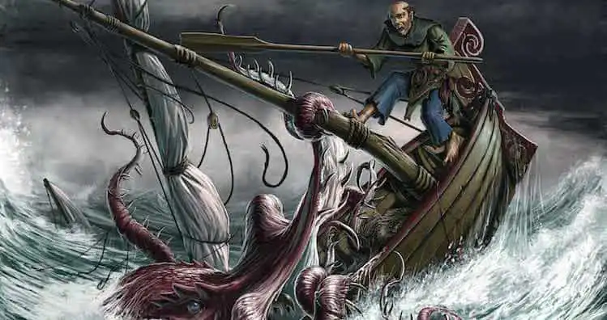

Call Me Ishmael
It’s been a month since we last reported our progress. A lot has occurred since that last entry. We have ventured through The Stormgate To Valencia. Met up with some interesting unicorn folk there. But we made it back to Skull Island. We ventured through a new storm gate to Cool Ranch and picked up the Bird Flu. That knocked us all out for a little over a week on all its own. We also took on some new crew members, picked up a new ship and a fair bit of skill. It’s been a month of turmoil and adventure for sure!
